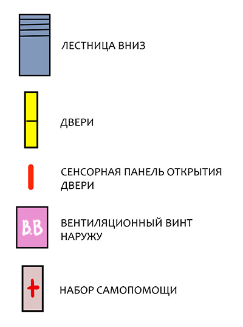
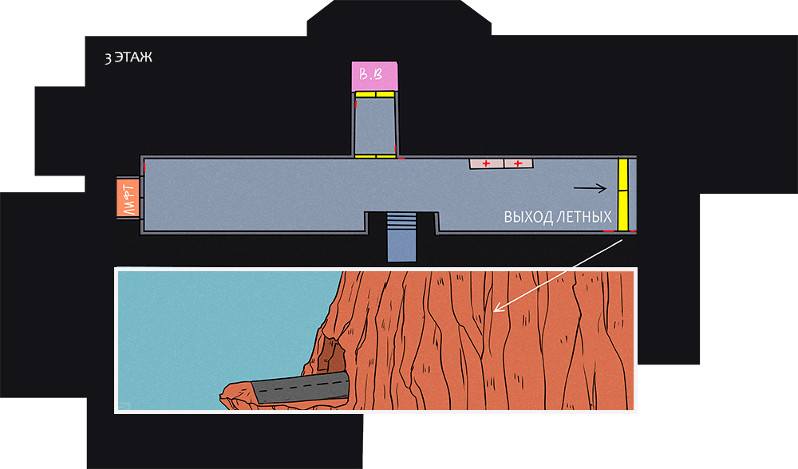

База: уровень 3
Крыша базы на скале.
Место, где можно постоять подумать о вечном, пафосно глядя вдаль.
 Примечание для колесных:
главное не забудьте, что вы не умеете летать, иначе даже медик потом по деталькам не соберет.
Примечание для колесных:
главное не забудьте, что вы не умеете летать, иначе даже медик потом по деталькам не соберет.
Место, где можно постоять подумать о вечном, пафосно глядя вдаль.
Уровень доступа: общий (открыт для всех).
Для просмотра на экране смартфона рекомендуется использовать альбомную ориентацию.
Чтобы посмотреть местоположение объекта кликните на его название ниже:


Дополнительная информация доступна при клике на подсвеченный объект или иконку



Взрывать все равно запрещается!

Набор самопомощи
Правда скрытые! Но они есть! Выход для летных
Да, вышки. Да, скрытые. Да, на юге крыши. Проверять не обязательно, не тратьте время.